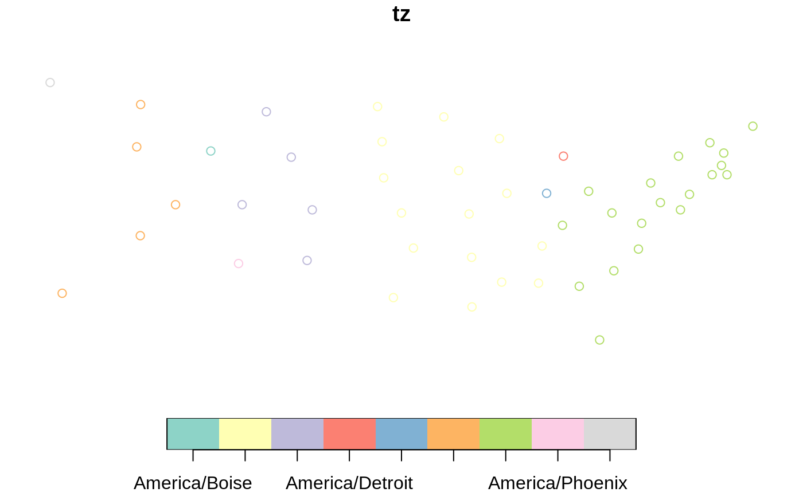

There are two methods - "fast", and "accurate". The "fast" version can
look up many thousands of points very quickly, however when a point is near
a time zone boundary and not near a populated centre, it may return the
incorrect time zone. If accuracy is more important than speed, use
method = "accurate".
tz_lookup(x, crs = NULL, method = "fast", warn = TRUE)
| x | either an |
|---|---|
| crs | the coordinate reference system: integer with the EPSG code, or character with proj4string.
If not specified (i.e., |
| method | method by which to do the lookup. Either |
| warn | By default, if |
character vector the same length as x specifying the time zone of the points.
Note that there are some regions in the world where a single point can land in
two different overlapping time zones. The "accurate" method includes these,
and when they are encountered they are concatenated in a single string,
separated by a semicolon.
The data used in the "fast" method does not include overlapping time zones
at this time.
if (require("sf")) { state_pts <- lapply(seq_along(state.center$x), function(i) { st_point(c(state.center$x[i], state.center$y[i])) }) state_centers_sf <- st_sf(st_sfc(state_pts)) state_centers_sf$tz <- tz_lookup(state_centers_sf) plot(state_centers_sf[, "tz"]) }#>#>#> Warning: Using 'fast' method. This can cause inaccuracies in time zones #> near boundaries away from populated ares. Use the 'accurate' #> method if accuracy is more important than speed.